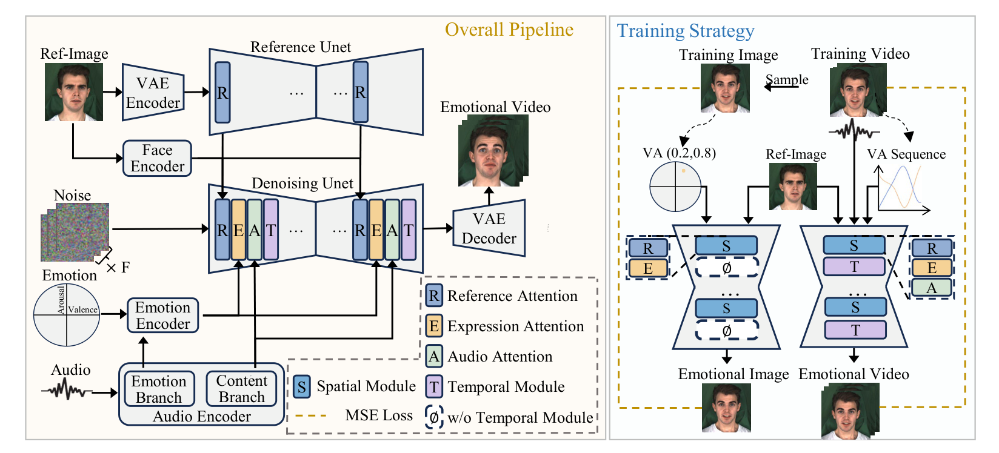
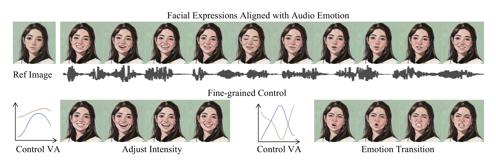
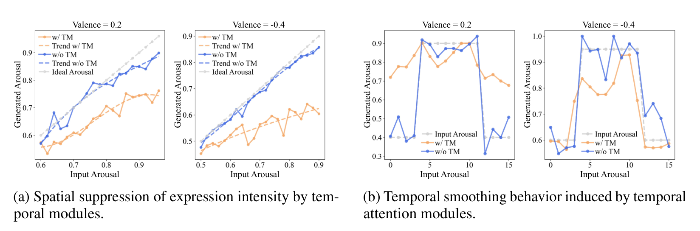

Method comparison
More expressive than lip-sync-first methods
On the same portrait and audio, VAExpress produces clearer motion in the eyes, brows, cheeks, and overall facial expression.
Expressive talking-face generation
VAExpress turns one portrait + one audio clip into a natural talking-face video. It goes beyond lip sync by generating facial expressions that follow the emotion of the voice.
Generate a talking face that is not only synchronized, but also emotionally expressive.
Continuous Valence-Arousal guidance with spatial-temporal decoupled training.
Readable expressions, controllable intensity, and smooth emotion transitions.
Generated results
Three independent windows show method comparison, audio-driven emotion, and continuous emotion control.
On the same portrait and audio, VAExpress produces clearer motion in the eyes, brows, cheeks, and overall facial expression.
When no manual control is supplied, emotion cues are estimated from speech and used to guide the facial performance.
A continuous emotion sequence can raise expression intensity gradually or move between affective states without abrupt category changes.
Expressions follow the affective state of speech.
Intensity can change continuously over time.
Transitions stay smooth without flattening expression.
How it works

Reference identity, speech, and continuous VA emotion signals enter separate conditioning branches before being combined by the diffusion generator. The right side shows the image-first, video-second training strategy.
Continuous guidance
Instead of choosing only a fixed label such as “happy” or “sad,” VAExpress uses a continuous two-dimensional emotion signal. This makes subtle intensity changes and smooth transitions possible.

Decoupled training
Training spatial and temporal modules together can over-smooth facial movement. VAExpress first learns accurate emotion-to-expression mappings on images, then adds temporal training for coherent video.

The top row shows expressions aligned with speech. The bottom row shows that continuous VA signals can adjust intensity and drive an emotion transition. The two-stage training keeps this expressive response before adding temporal coherence.
The orange curves with temporal modules are flatter and react more slowly to changing arousal. The blue curves without them follow the control signal more closely. This motivates learning expressive mappings first, then adding temporal coherence.

The practical effect is visible in the clips above. Controlled evaluation also shows stronger expression accuracy and video quality on MEAD and RAVDESS.
View the full evaluation in the technical report ↗VAExpress